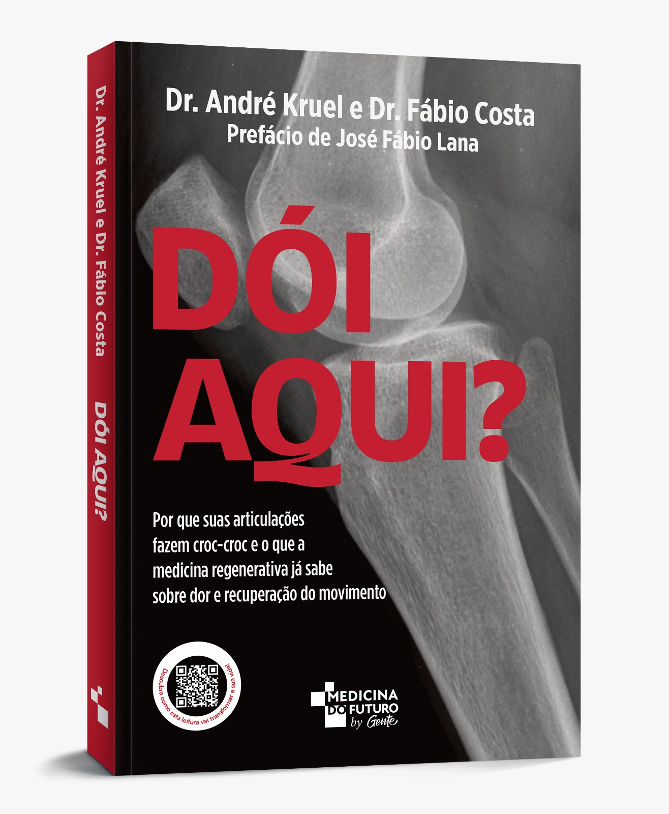

Artrose e infiltrações: onde cada uma entra
Por que a artrose não é só desgaste da cartilagem e em que etapa do tratamento as infiltrações fazem sentido, depois do exercício, do controle do peso e da fisioterapia.
Ebook gratuito · Artrose de joelho
É a pergunta que mais ouço no consultório. Neste guia gratuito, eu traduzo em linguagem simples uma revisão publicada em 2026 no Journal of ISAKOS, que comparou as duas infiltrações frente a frente. Sem pressa e sem promessas milagrosas.
PDF gratuito · Escrito pelo Dr. André Kruel · CRM-RS 23627
Preencha os dados abaixo. Em seguida, o PDF fica disponível para download imediato.
Obrigado pelo interesse. Clique abaixo para baixar o PDF agora e guarde para levar à sua próxima consulta. Se quiser ir além, o livro Dói Aqui? aprofunda o tema com a mesma linguagem clara.

O livro Dói Aqui?, do Dr. André Kruel e do Dr. Fábio Costa, traz uma conversa completa sobre dor nas articulações e as opções de cuidado.
Conhecer o livro Dói Aqui?Seis capítulos curtos, pensados para a conversa de consultório: diretos e acessíveis.
Por que a artrose não é só desgaste da cartilagem e em que etapa do tratamento as infiltrações fazem sentido, depois do exercício, do controle do peso e da fisioterapia.
Duas lógicas diferentes: o ácido hialurônico atua na lubrificação da articulação, e o PRP, preparado a partir do seu próprio sangue, atua na inflamação.
O que é uma metanálise, por que ela está no topo da evidência científica e como foram medidas a dor e a função do joelho.
O que a revisão encontrou sobre dor e função na comparação direta, e o grau de confiança de cada achado, contado com transparência.
Tipo de preparo, número de aplicações e grau da artrose: as situações em que a diferença a favor do PRP ficou maior nos estudos.
Se a aplicação dói, quantas sessões costumam ser indicadas, se substitui a fisioterapia e para quais graus de artrose faz mais sentido.
Base do ebook: Alshehri D, et al. Journal of ISAKOS, 2026 (doi:10.1016/j.jisako.2026.101218, versão pré-publicação). Os resultados de estudos são médias e não garantem o mesmo efeito em cada pessoa.
Ele foi escrito para você se alguma destas situações parece familiar.
Livro · Editora Gente
Se o ebook abre a porta, o livro aprofunda. Escrito pelo Dr. André Kruel e pelo Dr. Fábio Costa, Dói Aqui? é uma leitura acolhedora sobre dor nas articulações, opções de cuidado e o papel dos tratamentos ortobiológicos, com a mesma honestidade clínica e sem promessas de cura.